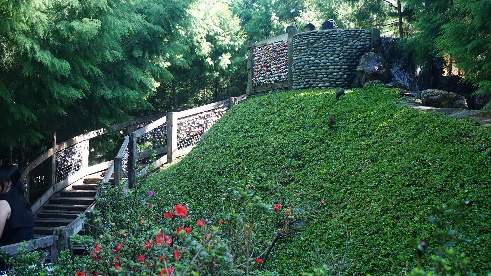

FARMHOUSE BANDUNG
Farmhouse adalah konsep desain ruangan yang sedang digemari beberapa tahun belakangan ini. Idenya adalah menciptakan rumah yang bernuansa hangat ala pedesaan di masa lampau. Ia biasanya ditandai dengan keberadaan aksen kayu di beberapa sudut ruangan. read more
50 45